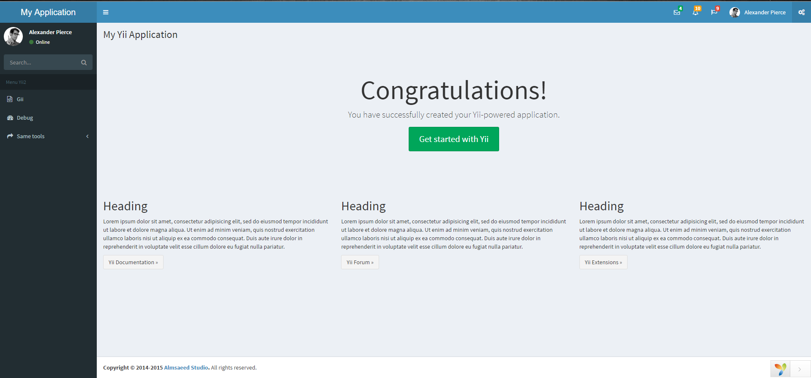

1.安装mdmsoft/yii2-admin,在github上的托管地址为:https://github.com/mdmsoft/yii2-admin.
使用composer方式引入
composer require mdmsoft/yii2-admin "~2.0"
2.在common/config/main-local.php中配置
'components' => [
'db' => [
//...
],
'authManager' => [
'class' => 'yii\rbac\DbManager', // 使用数据库管理配置文件
]
],
// 添加行为 ACF访问权限管理
'as access' => [
'class' => 'mdm\admin\components\AccessControl',
'allowActions' => [
'site/login',
'site/error',
]
],3.使用命令方式在控制台中创建所需表
yii migrate --migrationPath=@mdm/admin/migrations yii migrate --migrationPath=@yii/rbac/migrations4.配置模块
'modules' => [
//rbac管理
'rbac' => [
'class' => 'mdm\admin\Module',
'layout' => 'left-menu', // it can be '@path/to/your/layout'.
],
]5.由于我后台使用的管理员表名为administrator,还需要修改`mdm\admin\components\Configs.php
/**
* @var string Menu table name.
*/
public $userTable = '{{%administrator}}';5.在浏览器地址栏中中输入后台地址路径/rbac(该地址经过urlManager美化),即可看见效果
